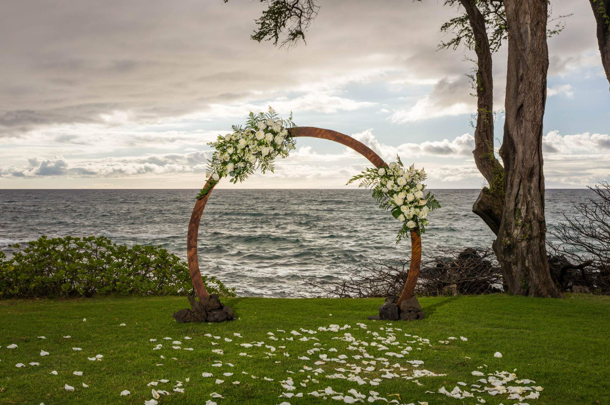
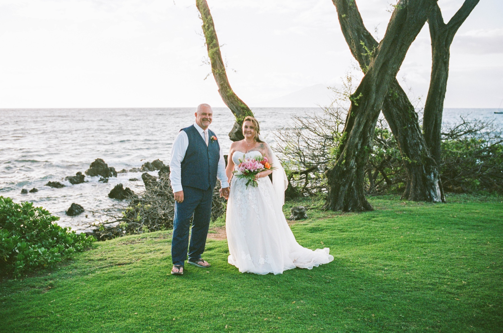
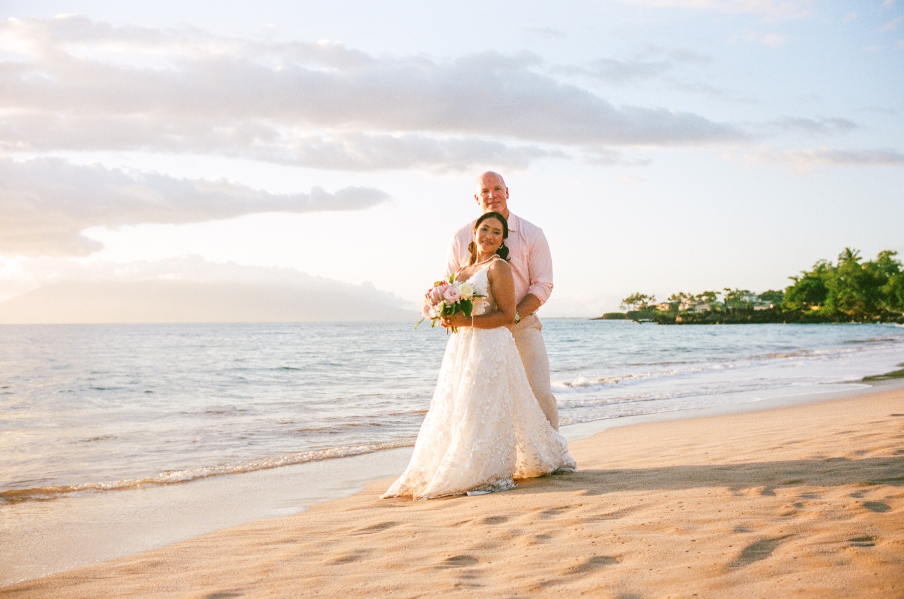

Where to park at Maluaka Beach.
A simple guide to the correct parking lot, the beach path, and our portrait and wedding meeting areas in Makena.
Begin at the Maluaka Upper Beach Parking Lot.
Navigate to the Maluaka Upper Beach Parking Lot, next to Kai Kanani Sailing Tours. Please do not use a similarly named lower lot—the upper lot is the starting point for these directions.
Makena, Maui, Hawaiʻi

Follow the path to the three trees.
- Exit the parking lot and turn right.
- Follow the path alongside the large condominium building.
- Take the first path on your left toward the beach.
- When you reach the grass, continue left for approximately 50 yards.
- Look for the group of three trees. That is where we will set up the wedding ceremony.
If you are arriving with décor, flowers or guests who need extra time, please allow a comfortable margin for the walk.

The ceremony should begin with calm, not a sprint.
Parking, gathering guests and walking to the ceremony area always takes a little longer than expected. Arriving early gives everyone time to settle, enjoy the view and be fully present when the ceremony begins.
Please keep phones, keys and personal items together in one easy-to-carry bag. The shoreline and grass can be damp, so choose footwear that is comfortable for the walk.
What guests ask before a Maluaka Beach wedding.
Which Maluaka parking lot should we use?
Use the Maluaka Upper Beach Parking Lot at 147 Makena Keonoio Road, next to Kai Kanani Sailing Tours.
How do we find the ceremony from the parking lot?
Turn right after leaving the lot, walk beside the large condominium building, take the first beach path on the left, then continue left across the grass for about 50 yards to the three trees.
Is the ceremony directly beside the parking lot?
No. There is a short walk from the upper lot to the beach and grass area. Allow extra time for older guests, children, wedding attire and anything being carried.
What if we cannot find the three trees?
Call or text Wailea Photo at 808.298.5188. We would rather guide you early than have you wander close to the ceremony time.